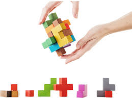
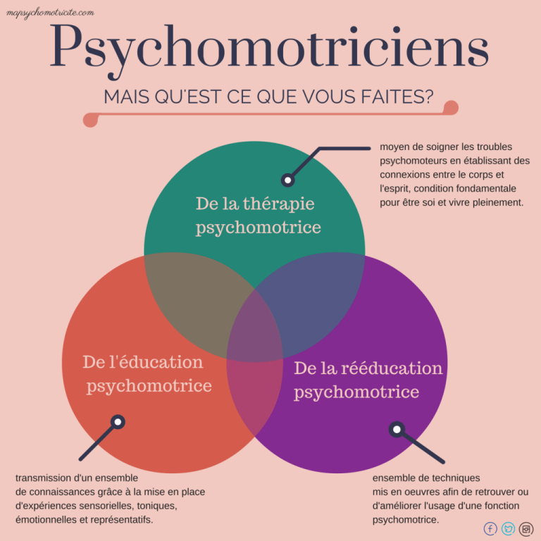

Sommaire
qu'est-ce-que psychomotricien(ne)?
quel sont les étude, et formation pour devenir psychomotricien(ne)?
quel salaire pour un psychomotricien(ne) dans ces début?
qu'elle sont les évolution de carrière notable?
Qu'est-ce-que psychomotricien(ne)
psychomotrien(ne) est un metier dit paramédical et nous pouvons consulter
uniquement ces spécialiste sur avis du médecien généraliste et consiste a
soigner des personne avec un
handicap psycho-physique.
quel sont les étude, et formation pour devenir psychomotricien(ne)?
pour devenir psychomotricien, il faut posséder le diplome d'état de psychomotricien (bac+3). Inscription sur parcoursup:accés sur dossier + entretien optionnel.
Pour se présenter au concours d'entrée, un bac a orientation scientifique est conseil(exemple un bac stss). dans tout les cas, beaucoup de candidats passent le concours après une année de préparation(example l'école préparatoir de toulouse), ou si vous n'ètes pas sur de vouloir vous lancés dans cette orientation vous pouvez faire une années de découvertes du métier auprés d'un professionnel ou vous serait sont assisstant(e) et ou vous serez payer se qui vous permetras de vous faire votre propre opinion du métier. Chaque institut de formation de psychomotrien(environ une quinzaine) organise son propre concours sur la base des programmes des classes de première et terminale à orientation scientifique(épreuve de biologie, contraction de texte, entretien et test psychotechniques).  Les titulaires d'une licence (psychologie,biologie,STAPS...) peuvent intégrer par équivalence la 2e année aprés éxamen. 